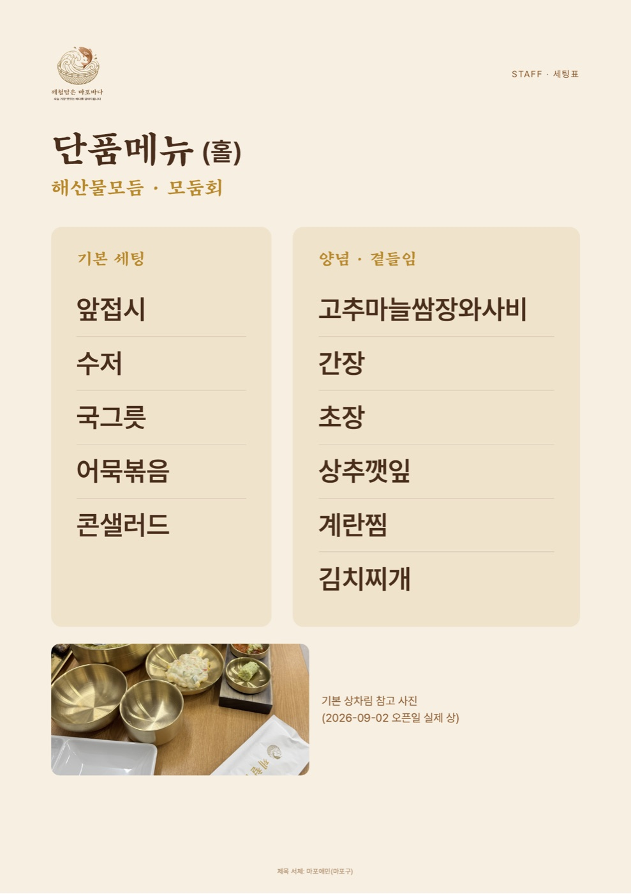
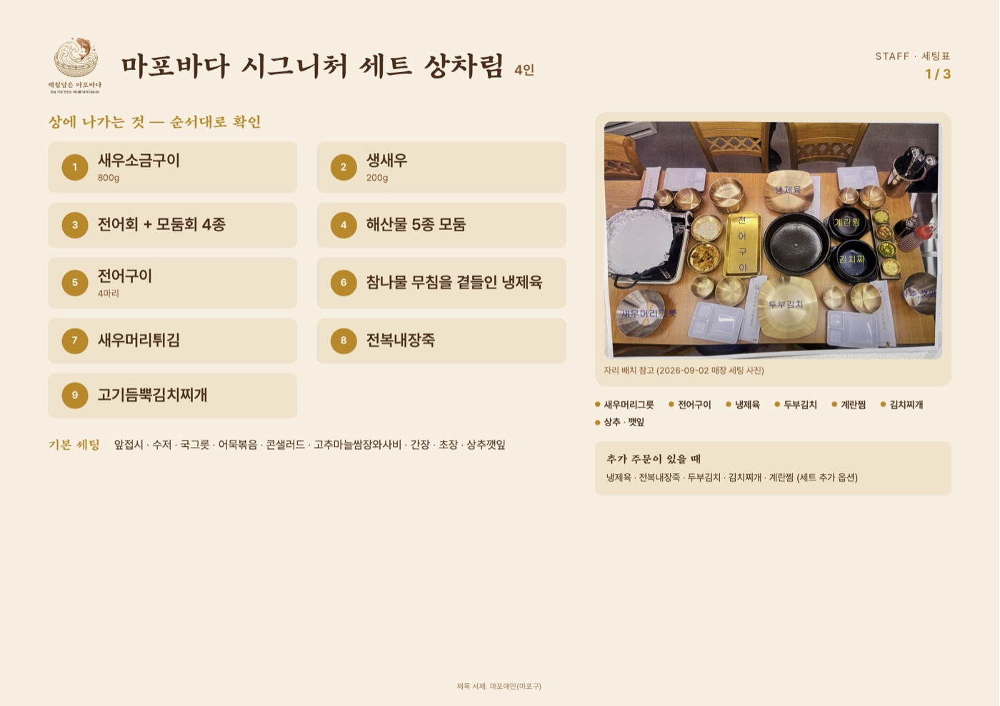
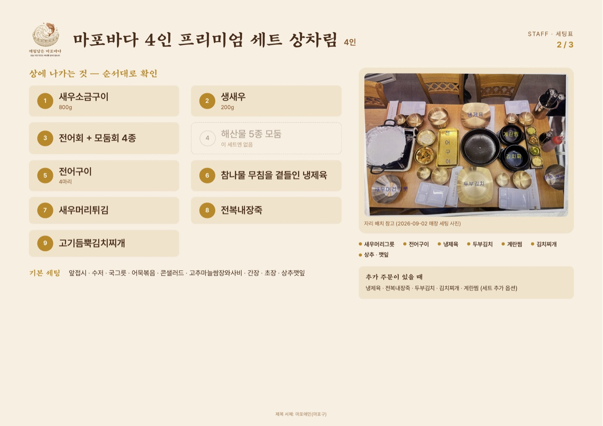
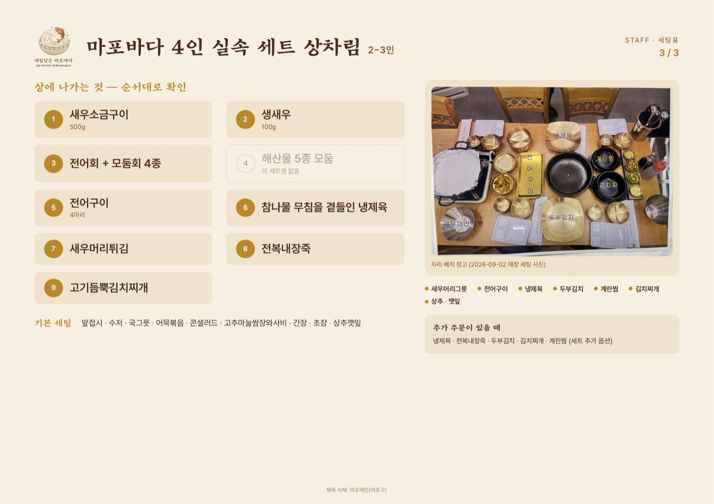
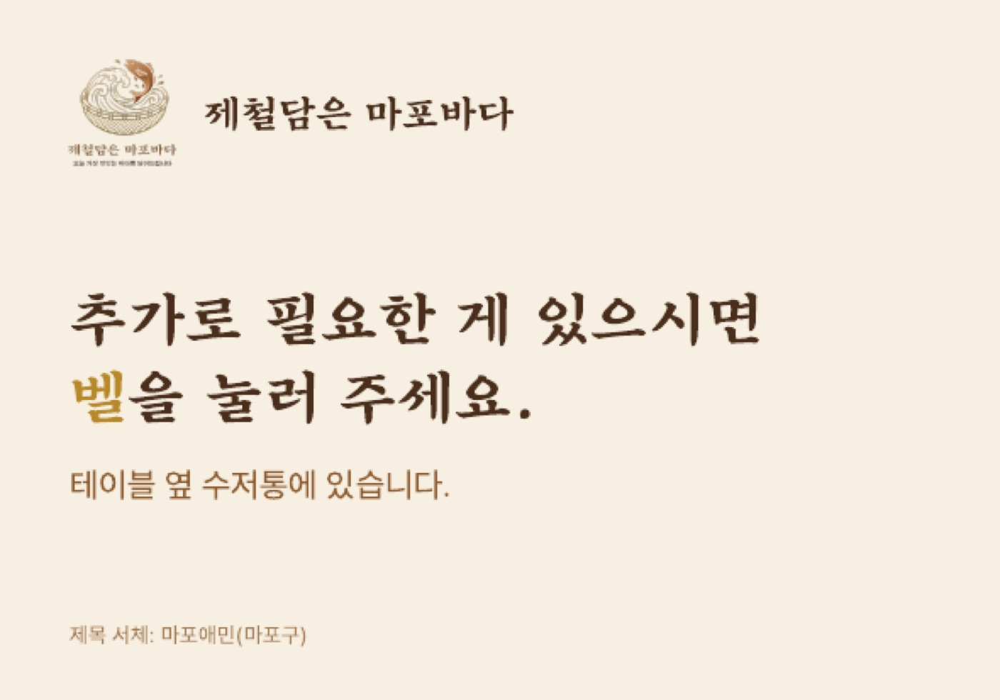
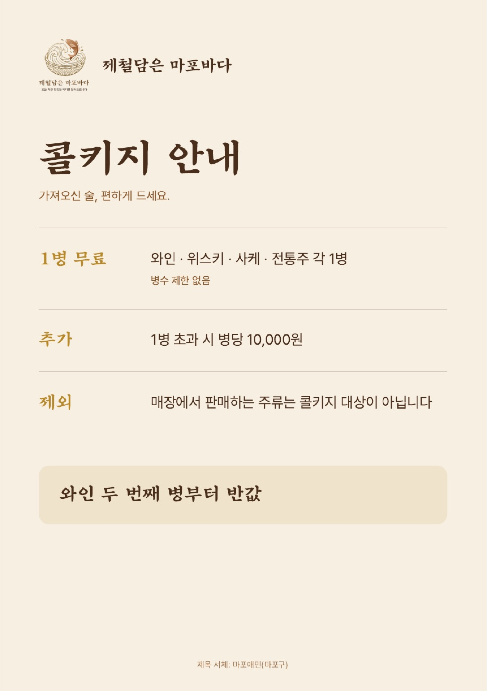
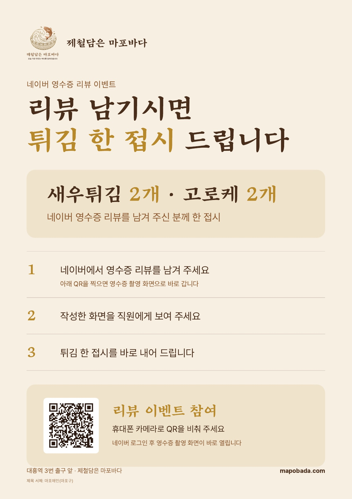

MAPOBADA CUSTOMER DESK
제철담은 마포바다 — 확인·자료 한 곳
저희가 해드린 것, 밖에서 들려오는 반응, 지금 확인이 필요한 것, 자료까지 이 페이지 하나에 모아 둡니다. 새로 생기는 것도 다른 주소를 또 만들지 않고 이 페이지를 계속 고쳐 씁니다 — 나중에 필요할 때도 이 링크 하나만 열어 보시면 됩니다.
마지막 확인9.242026 · KST
ONE-PAGE OPERATING VIEW
마포바다 운영 결과, 한눈에
우리가 실제로 반영한 일과 밖에서 나온 반응을 함께 보여 드립니다. 카드를 누르면 원문과 확인 날짜를 볼 수 있습니다.
9/23 홈페이지 추석 영업 안내 · 공식 블로그 새 글 2건 · 9/24 당근·Google 추석 소식과 사진 반영을 확인했습니다. 각 결과와 근거 날짜는 카드에서 볼 수 있습니다.
외부 후기 주간 흐름
월요일~일요일 게시일 기준으로 묶었습니다. 36건은 9/13까지 확인한 기록입니다.
외부 후기 마지막 실측은 9/13입니다. 9/14 이후 새 글은 아직 재집계하지 않아 미확인입니다.
9/23–9/24 반영한 것
- 당근 추석 연휴 소식 게시 · 단골 8명 화면 확인
- Google 추석 안내 업데이트 게시 · 사진 반영 화면 확인
- 블로그 기존 글은 건드리지 않고 새 글만 이어갑니다
- 자료 상태에서 현재본과 이전 판을 구분해 보실 수 있습니다
지금까지 해드린 것
카드를 눌러 보시면 자세한 내용이 펼쳐집니다.
8/12~8/20계약·세금계산서·입금
서명부터 입금까지 전부 처리 완료.
8/21~홈페이지 mapobada.com
매장 소개·사진·오시는 길을 한 주소에 모았습니다.
9/1다섯 채널 정비
네이버·구글·당근·카카오맵·티맵 정보 등록·정정(카카오맵 상호 오표기 정정 포함).
9/3 제작 기록매장 인쇄물 5종
초기 메뉴판·벽 안내·호출벨·콜키지 안내 제작 기록.
9/3오픈 홍보 게시
당근 소식·릴스 콘티·리뷰 이벤트·플레이스 소식까지 한 번에.
이전 판매장TV 영상
이전 영상 뒤에 수정 작업이 진행 중입니다.
9/7짧은 릴스 (36초)
같은 소재로 인스타에 짧게 올릴 수 있는 세로 영상도 하나 만들어 올려드렸습니다.
9/13 확인구글 프로필 사진 재업로드
당시 음식 사진 5장 재업로드와 공개 반영을 확인.
밖에서 들려오는 반응 — 블로그 후기
외부 네이버 블로그 후기 36건 · 9/2–9/13에 직접 확인한 기록 · Google 리뷰 2건은 별도로 집계
- 첫 화면은 월요일~일요일 주차별 개수만 보여 드리고, 특정 주의 원문은 그 주차 카드를 누릅니다.
- 36건은 플랫폼 전체 통계가 아니라 저희가 실제로 찾아 확인한 외부 후기 기록입니다.
- 공식 블로그(ds1bmy) 글과 방문객 블로그 후기는 서로 다른 묶음으로 관리합니다.
원문 목록 36건게시일·방문 유형·한 줄 요지·링크
| 게시일 | 방문 유형 | 한 줄 요지 | 보기 |
|---|---|---|---|
| 9/2 23:36 | 대흥동 술집 | 제철 회·해산물, 술 곁들이기 좋은 곳으로 소개 | epdp96 |
| 9/3 06:20 | 가족모임 | 가을 전어·새우구이와 회, 시그니처 한 상 후기 | lovelya3 |
| 9/3 07:47 | 가족모임 | 새우구이부터 전어까지, 다음 모임도 여기서 | jong3315 |
| 9/3 23:08 | 가족모임 | 단체 이용 가능, 대흥역 근접 강조 | veronica2323 |
| 9/4 14:58 | 대흥동 술집 | 사장님 친절, 재방문 의향 있음 | poi09890 |
| 9/5 13:08 | 회식 코스 | 제철 해산물 가득한 한상, 회식 장소로 추천 | matdory_yam |
| 9/6 08:10 | 가족모임(5인) | 시그니처 세트 솔직 후기 | somsom_lee |
| 9/6 09:33 | 대흥동 술집 | 제철 술집, 회·새우 조합 총평 | 0916dj |
| 9/6 13:33 | 가족모임 | 오픈 첫날부터 인산인해, 품질 남다름 | gpskwhgdk1 |
| 9/6 22:15 | 가족모임(아들 동반) | 뱃고동 벨소리에 아이들이 좋아함, 놋그릇 상차림 | yejong |
| 9/6 22:17 | 가족모임 | 10분 웨이팅, 로컬 맛집 느낌 확실 | cwrachel |
| 9/6 23:36 | 가족모임 | 시그니처 한 상 솔직 후기, 추천 | kyy7725 |
| 9/7 08:21 | 가족외식(아빠 생일) | 모둠회 구성 정확, 직원 응대 빠르고 친절 | hjhong7466 |
| 9/7 11:53 | 지인모임 | 가리비회 처음 먹어보고 감탄, 새우소금구이 호평 | picky0707 |
| 9/7 12:11 | 맛집 탐방 | 9월 제철 전어·새우 먹으러 방문, 시그니처 한 상 상세 후기 | jinneesmint |
| 9/7 14:20 | 지인모임 | 세트메뉴 구성 상세 소개, 뱃고동 벨소리 재미 | justhangout |
| 9/7 16:03 | 가족모임(4인) | 전복죽 극찬("꼭 드셔보세요"), 아기 동반 편의 | shineeyj |
| 9/7 22:24 | 가족모임(4인) | 수조뷰 좌석, 상 통째 서빙 신기함 | 1floor_nb |
| 9/8 00:20 | 지인모임 | 시그니처 한 상 상세 리뷰, 콜키지 정책 소개 | prinj97 |
| 9/8 12:09 | 가족모임(유아 동반) | 두부김치·냉제육 같이 주는 구성이 신박하다는 평 | aroma0101 |
| 9/8 13:49 | 가족모임(5인) | 프리미엄세트 후기, 회 신선함과 세트 구성 참신함 | obsay24 |
| 9/8 14:30 | 친구모임·술자리 | 사케 곁들인 제철 해산물 | mamie316 |
| 9/8 15:57 | 가족모임 | 가족 모두 만족한 한 상 | iamcherrysiro |
| 9/8 23:02 | 지인모임 | 제철 해산물 한 상이 푸짐 | relax_ahn |
| 9/10 10:32 | 예약 일행 | 활새우 중심 제철 한 상 | ssunho7 |
| 9/10 17:04 | 부부식사 | 부부가 즐긴 제철 해산물 | everydaynaelda |
| 9/10 23:54 | 예약 일행 | 예약해서 즐긴 제철 코스 | ysb2421 |
| 9/11 08:54 | 가족모임(5인) | 5인 가족, 가성비 해산물상 | happywhee2 |
| 9/11 09:00 | 가족모임 | 가족 맞춤 푸짐한 해산물상 | han890218 |
| 9/11 10:38 | 데이트 | 연인과 즐긴 해산물 한 상 | asdwwee97 |
| 9/11 16:04 | 친구모임·술자리 | 다섯 친구의 해산물 술상 | swj33311 |
| 9/11 17:10 | 경기관람 전 | 축구 전 새우·전어 한 상 | blue_wish_ |
| 9/11 20:49 | 친구모임·술자리 | 친구와 제철 해산물 한 상 | jinlogue |
| 9/11 23:01 | 친구모임(3명) | 친구 셋의 푸짐한 새우상 | hyune8e |
| 9/12 03:40 | 지인모임 | 전어와 생새우 제철 한상 | footory |
| 9/13 18:50 | 술자리 | 해산물 코스와 생맥주 | gusalsqpf |
- 9/2~9/13 확인 구간에 외부 후기가 꾸준히 발견됐습니다. 그 뒤의 새 글은 아직 재집계하지 않았습니다.
- 상판을 통째로 밀어 올리는 서빙 방식과 전복내장죽이 후기마다 유난히 자주 언급됩니다 — 다음 영상·홍보 문구에 쓰기 좋은 포인트입니다.
- 구글 리뷰도 2건 들어왔습니다(별점 5.0 포함) — 저희가 직접 답글을 작성해 올려드렸습니다.
- 새로 올라온 플랫폼 리뷰는 계정 화면에서 확인한 뒤 답글 여부와 결과를 기록합니다.
9/3 확인 요청 기록
당시 요청한 항목입니다. 현재 회신·완료 상태는 최신 연락과 대조 전입니다.
1. 화장실에 붙일 소개 글
9/3 요청당시 카톡으로 초안을 드린 항목입니다. 현재 판정은 최신 대화 확인 뒤 갱신합니다.
2. 매장TV 영상, 손볼 곳
이후 재제작이전 요청 뒤 새 매장TV·유튜브 겸용 영상의 수정이 진행 중입니다. 최종본 전달·TV 재생은 아직 확인 전입니다.
4. 벽 세트 상차림 원본 사진
상태 재확인9/3 안내물은 벽 인쇄물을 촬영한 이미지라 흐림이 있었습니다. 원본 파일 수령 여부는 최신 기록과 대조 전입니다.
매장 TV 영상 상태
최종본 전달 전이전 12분 57초 영상 뒤에 매장TV·유튜브 겸용 새 파일을 수정하고 있습니다. 최종 품질 확인과 대표님 전달, 실제 TV 재생 확인이 남아 있습니다. 확정된 파일과 보는 주소가 생기면 이 자리에 연결하겠습니다.
메뉴판 (A4 양면) 상태
9/3 메뉴판은 현재 네이버 메뉴와 달라 인쇄용 안내에서 내렸습니다. 네이버 메뉴와 대조해 만든 새 판은 대표님 확인·전달 단계입니다. 확인된 인쇄용 PDF가 준비되면 이 자리에 연결하겠습니다.
벽 안내 (A3) — 9/3 제작 기록
아래는 당시 만든 보기본입니다. 메뉴 내용의 현재 일치 여부는 다시 확인해야 하므로 인쇄용 PDF는 잠시 안내하지 않습니다.




「세트 상차림」 보기본은 벽 인쇄물을 촬영해 일부 흐립니다. 현재 메뉴판과 일치하는지 확인한 뒤 인쇄용을 다시 안내합니다.
호출벨 카드 · 콜키지 안내




9/3 제작 자료입니다. 현재 사용 전에는 콜키지 조건과 연락처 등 표기를 다시 확인해 주세요.
리뷰 이벤트 안내 (A4)
9/18 카톡으로 주신 문구 그대로 — 네이버 영수증 리뷰 시 튀김 한 접시(새우튀김 2개·고로케 2개). 손님이 QR을 찍으면 영수증 촬영 화면으로 바로 갑니다.


A4 그대로 100%로 출력하시면 됩니다. 문구나 조건(예: 테이블당 1회)을 더 넣고 싶으시면 카톡 한 줄 주세요.
테이블 안내판 — 바로 출력
영수증 리뷰 · 와이파이 · 네이버지도 세 장입니다. 누르면 A4 한 장짜리 출력 화면이 열리고, 「출력하기」를 누르시면 됩니다. 매장에 붙어 있는 QR은 그대로 쓰셔도 됩니다.
- 영수증 리뷰 안내판 — 네이버 영수증 리뷰 시 튀김 한 접시
- 와이파이 안내판 — 찍으면 바로 연결
- 네이버지도 안내판 — 손님이 가게를 쉽게 찾게
고칠 곳이 있으면
바꿀 내용이 있으면 카톡으로 알려주세요. 확인된 새 판만 이 페이지의 현재 자료로 올립니다. 이전 보기본은 인쇄에 쓰지 마세요.